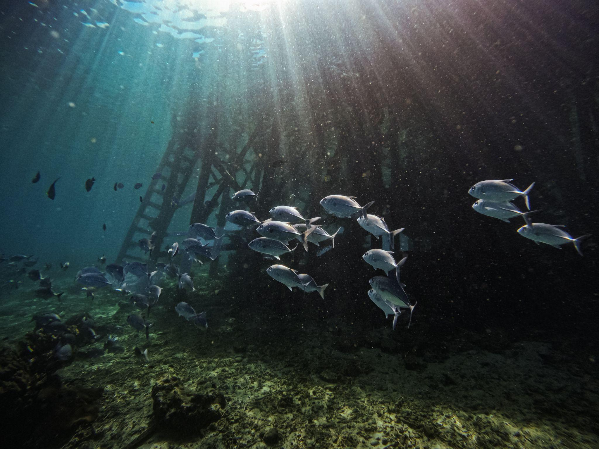

In this guide
Sebayur is a snorkeling stop in the Komodo archipelago, where white-sand shores, gentle hills and underwater scenery make space for a slower day on the water.
Many Kapalsantai routes include Sebayur for its snorkeling, scenery, and tranquil atmosphere. Itineraries and stops depend on the trip and conditions.
What makes Sebayur special?
- 01
Coral gardens close to shore
Explore the underwater scenery and look for reef fish when conditions and your guide allow.
- 02
A slower moment
Spend time on the beach, float in the water, or enjoy the views between destinations.
- 03
Near dive sites
The wider Komodo area includes dive sites such as Crystal Rock, Castle Rock, and Batu Bolong. Routes and activities depend on your operator.

Where is Sebayur and how do you get there?
Sebayur is reached by boat from Labuan Bajo. The journey may take around two hours, depending on your route, vessel, and sea conditions.
Some itineraries combine the stop with destinations such as Taka Makassar, Kanawa, or Kelor. Ask your operator which stops are included in your trip.
When is the best time to visit?
The dry season, generally April to October, is a popular time for boat trips around Labuan Bajo. Morning or late-afternoon light may also be appealing for photographs.
Weather, visibility and currents can change. Check conditions with your boat crew and follow their advice before entering the water.
What can you experience in Sebayur?
Reef snorkeling
When conditions are suitable, explore the reef and look for marine life without touching coral or disturbing wildlife. Sightings are never guaranteed.
Mini treks and island views
Short walks may offer views of the water and nearby islands. Check access and the itinerary with your guide.
Slow down by the sea
Rest on the sand, enjoy a float with appropriate equipment, or take in the evening light if your itinerary includes a sunset stop.
Tips and what to bring
- Reef-safe sunscreen, a hat, and a rash guard.
- A dry bag, towel, and change of clothes.
- A refillable water bottle and light snacks.
Keep fins away from the reef, avoid touching coral, and give marine life plenty of space.
Good to know
Some parts of the island have resorts; facilities available to day visitors depend on the location and trip. Confirm facilities, park fees, and what is included directly with your operator.
Sebayur may be paired with other stops, including a manta destination, depending on your route and conditions.
Ready to drift in calm blues?
Make room for a slower moment on your Komodo journey. Explore Kapalsantai’s boat trips and find an itinerary that suits your plans.
Explore boat trips